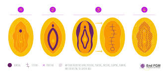

In the time it takes you to read this singular paragraph, another girl somewhere in the world will have undergone the horrifying process of female genital mutilation. Over 230 million women and girls alive today have been subjected to this harmful practice – a number that has shockingly increased by tens of millions in just the past eight years.
Female genital mutilation, also known as FGM, remains a very pressing global concern, affecting millions of girls and women in the world. Despite many organizations’ persistent efforts to eradicate this practice, it continues to persist in various cultures and communities across the globe, with thousands being put through this procedure even before puberty and adolescence. It is done due to many reasons, but mainly because of the pressure families face in forcing young girls to undergo the operation in fear of being rejected by their communities; the belief that it preserves the girl’s sexuality and fidelity; to prepare for marriage and the transition into adulthood; and religious reasons.
Recent data from UNICEF reveals a staggering increase in the number of FGM cases worldwide. Over 230 million females alive today have been victims of FGM – a 15% increase, or 30 million more cases, compared to data released only eight years ago. This alarming rise only highlights the urgent need for intensified global efforts to address this human rights violation, with many victims not even old enough to understand what’s happening to them or why.
FGM is most prominently practiced in Africa, with just over 144 million cases, then followed by Asia with over 80 million, and the Middle East with over 6 million cases. However, it would be wrong to think that FGM is practiced only in those regions alone; it has been documented in at least 92 countries, including communities and diaspora populations in Europe, North America, Australia, and New Zealand.
The World Health Organization categorizes FGM into four main types, ranging from some sort of removal of the clitoris to other harmful procedures performed on female genitalia for unnecessary, non-medical reasons. The most common forms are Types I (partial or full removal of the clitoris glands and hood), II (partial or full removal of the clitoris glands and labia), III (narrowing of the vaginal opening by slicing the labia), and IV ("nicking" without flesh removed), accounting for about 90% of cases globally.
However, of the 92 countries where FGM is practiced, 51 have enacted specific laws prohibiting it. Africa leads in this case, with 28 countries forbidding the procedure, and also accounting for 55% of the total laws that are against this mutilation. However, Asia lags behind in restrictions placed on FGM, with only 2 countries (Iraq and Oman) specifically banning it and the rest of the continent not.
FGM poses serious physical and mental health risks for women and girls. Complications can include severe pain, especially during sex, infection, increased risk during childbirth, and long-term psychological trauma. The WHO estimates that treating the health complications of FGM costs health systems approximately $1.4 billion per year, a figure expected to rise in the future.
Despite the increase in numbers over the years, there are signs of progress in combating FGM. UNICEF illustrates that significant improvements have been made in some countries, with much progress of the past 30 years achieved in the last decade alone! This suggests that targeted interventions and widespread awareness campaigns can be effective in reducing the prevalence of FGM. The WHO has also recognized FGM as a form of gender-based violence and is committed to eliminating it.
As organizations work to stop this harsh procedure, it is crucial to recognize that this is not just a health issue, but a fundamental human rights concern. Only through collective effort can we hope to create a world where every girl and woman is free from the threat of FGM and realize her bodily autonomy.